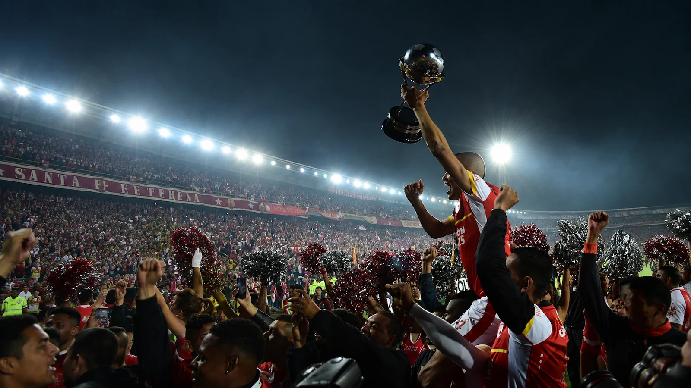

Blog oficial deIndependiente Santa Fe

Un espacio hecho por hinchas para hinchas: crónicas de cada partido, análisis del plantel y las historias que han marcado la camiseta roja a lo largo de los años.